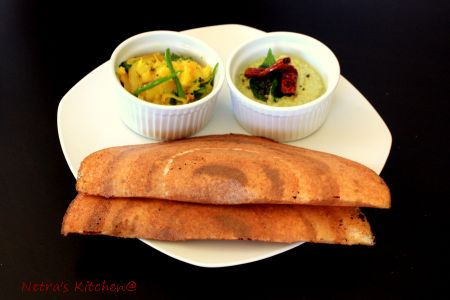

Dosa

Dosa
Preparation & Cooking: 15-20 mins
Serves persons:5-6
Ingredients:
- 2 cup rice
- 3/4 cup urad dal
- 1 tbsp maida
- salt
Potato filling:
- 2 large boiled potato
- 1 medium onions sliced
- 2 green chillies
- 1/4 tsp mustard seed
- 1/2 tsp urad dal
- 1/2 tsp ginger grated
- 2-3 curry leaves
- 3 tbsp finely chopped coriander
- 1/2 tsp turmeric
- salt to taste
- 1/2 tsp sugar(optional)
- oil for frying
Coconut chutney:
- 1 cup grated coconut
- 2-3 green chilli
- 1 small piece ginger
- 3 tsp roasted split chickpeas
- 1/2 tsp cumin seeds
- salt to taste
- sugar to taste
- 3 tbsp coriander chopped
Method:
- Soak Rice and Urad dal for 4 to 5 hours.
- Grind it to paste adding water as required. Then add maida and salt grind again.
- Cover and keep aside in a warm place for overnight.
- Heat pan with little oil and pour a ladle of batter, spread in circular motion.
- Let it cook for 3 to 4mins.
- Put some ghee/butter on it and Serve it with coconut chutney and Alu sabji.
Potato Filling:
- Cut the potatoes in small pieces.
- Heat oil in an pan and add urad dal when dal become golden brown then add mustard.
- Then add curry leaves, green chillies, onions and ginger and fry for 2 minute.
- Add salt, turmeric and finally add potato.
- Mix it well and garnish with coriander leaves.
Coconut chutney:
- Grind all the ingredient in coconut chutney with little water.
- Give tadka heat pan, put 1tsp oil, mustard and 2-3 curry leaves.
- When mustard start crackling, add that tadka to chutney.
- Our coconut chutney is ready to serve with dosa.
Oats Upma
Preparation & Cooking: 35-40 mins
Serves 4-5 persons
Ingredients:
- 1 cup old fashioned oats
- 1 small onion finely chopped
- 4-5 Beans thinly sliced
- 1/2 Carrot thinly sliced
- 1/2 cup Cabbage thinly sliced
- 2-3 green chilli sliced
- 2 tsp green peas
- 1 tsp garlic paste
- 3-4 curry leaves
- 2 tbsp coriander leaves
- 1/4 mustard seeds
- 1/2 inch cinnamon
- 2 cloves
- 1 cardamom
- salt to taste
- 3tbsp oil
Method:
- Dry roast the old fashioned oats till get aroma from oats.
- Grind the cinnamon, cloves and cardamom keep aside.
- Heat oil in a pan and then add mustard, cumin, urad dal and fry till dals turns golden brown.
- Now add curry leaves, green chilli, onion, beans, carrot and peas and saute till veggies become soft.
- Then add cabbage, salt, sugar and pinch of grind masala powder, mix it well.Then add water to boil.
- Now add carefully oats to boiling water and keep stirring for 2 minutes.
- Close the lid and reduce the heat. Let it cook for 4-5 minutes.
- Garnish with coriander leaves.
Diat Sandwich
Preparation & Cooking: 5-10 mins
Serves persons: 2-3
Ingredients:
- 6 slices whole-wheat bread
- 1 extra ripe avocado
- 8 leaves iceburg lettuce
- 1 small onion sliced
- 1 tomato sliced
- 1 cucumber sliced
- 1 capsicum sliced
- 2 tbsp lemon juice
- 1/4 tsp pepper powder
- salt to taste
Method:
- Combine avocado, lemon juice, salt, pepper powder and mash until smooth spread, Keep aside.
- Toast bread and then spread an equal amount of avacado spread on each slice.
- Now on 3 bread slices put lettuce, onion, tomato, cucumber.
- Cover each with another slice of toast. Cut sandwiches in half and serve immediately.
- This raita goes well with all type of sabji and rice.
Sprouted mung salad
Preparation & Cooking: 5 mins
Serves persons: 2-3
Ingredients:
- 1 cup sprouted mung beans
- 1/2 cup finely chopped onion
- 1/2 cup finely chopped tomato
- 2 tsp finely chopped coriander
- 1/4 tsp cumin powder
- 1/4 sp chat masala
- 1 tsp lemon juice
- salt to taste
- 1/4 tsp sugar(optinal)
Method:
- Combine all the ingredients and mix it well.
- Serve it and enjoy.
- This raita goes well with all type sabji.
Carrot and sprouted mung salad
Preparation & Cooking: 5 mins
Serves persons: 2-3
Ingredients:
- 1 cup sprouted mung beans
- 1 cup grated carrot
- 2 tsp finely chopped coriander
- 1/4 tsp cumin powder
- 1/4 sp chat masala
- 1 tsp lemon juice
- salt to taste
- 1/4 tsp sugar(optinal)
Method:
- Combine all the ingredients and mix it well.
- Serve it and enjoy.
- This raita goes well with all type sabji.
comments powered by